Simulation-Based Inference
From Bayesian Foundations to Neural Density Estimation
School of Earth & Atmospheric Sciences — Georgia Institute of Technology
2026-03-02


Simulation-Based Inference
a tutorial
Felix J. Herrmann
School of Computational Science and Engineering — Georgia Institute of Technology
Slides build on Louppe (2023a), Deistler et al. (2025), and Arruda et al. (2025)
Why SBI? The Digital Twin Perspective
- Digital twins rely on forward simulators: physics-based models mapping parameters \(\btheta\) to observables \(\bx\)
- Core challenge: the inverse problem—given observations \(\xo\), what are the plausible parameters \(\btheta\)?
- SBI sits at the intersection of:
- Uncertainty quantification
- Inverse problems
- Bayesian inference
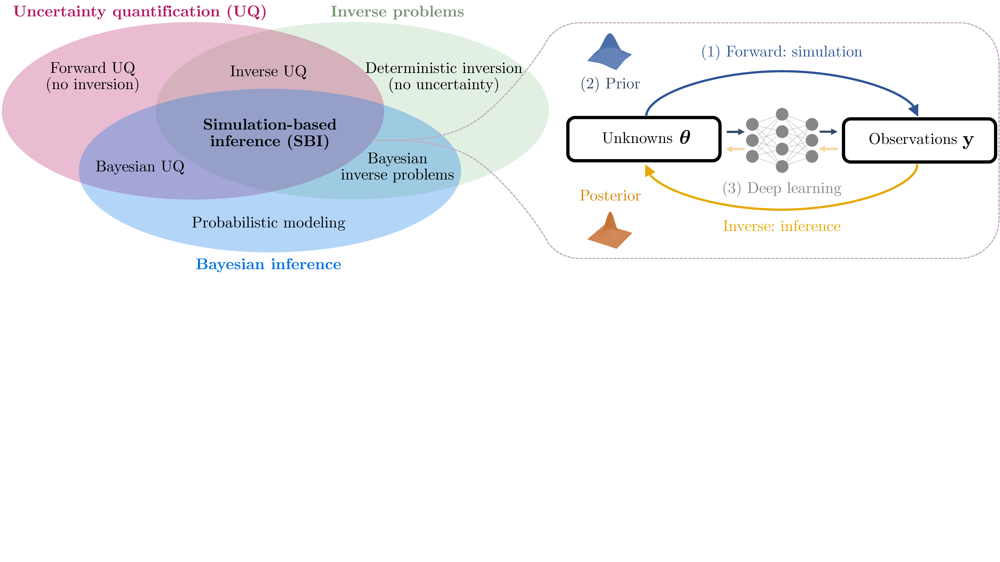
SBI for Bayesian Data Assimilation
SBI provides amortized prior-to-posterior mappings that naturally integrate into sequential Bayesian data assimilation workflows:
- Recursive filtering: At each assimilation step, the current state estimate (prior) is updated via incoming observations to yield a posterior. SBI learns this mapping offline from simulated ensembles, then applies it online at negligible cost per step.
- Nonlinear ensemble filtering via couplings: Spantini, Baptista, and Marzouk (2022) generalize the Ensemble Kalman Filter to nonlinear settings using transport maps that couple prior and posterior ensembles. SBI-trained networks can serve as such transport maps.
- Application: CO\(_2\) storage monitoring: Gahlot et al. (2024) combine SBI with ensemble Bayesian filtering to build an uncertainty-aware Digital Shadow for underground CO\(_2\) storage, recursively assimilating time-lapse seismic and well data.
Tip
SBI enables scalable, amortized Bayesian updates for high-dimensional, nonlinear dynamical systems where traditional filtering (EnKF, particle filters) struggle.
An Introductory Example: The Ball Throw
Consider a simple simulator: a ball is thrown at angle \(\btheta\) and lands at distance \(\bx\) (Deistler et al. 2025).
- Stochastic simulator: even at the same angle \(\btheta\), tailwind and measurement noise cause the ball to reach different distances \(\bx\)
- Bayesian inference: given an observed distance \(\xo = 13\text{m}\), what angles \(\btheta\) could have produced it?
- The posterior \(p(\btheta \mid \xo)\) can be bimodal—a low angle with strong tailwind or a high angle with no wind can produce the same distance
- Key idea of SBI: estimate the posterior from simulated pairs \(\{(\btheta_i, \bx_i)\}\) drawn from the joint \(p(\btheta, \bx)\), without evaluating the likelihood
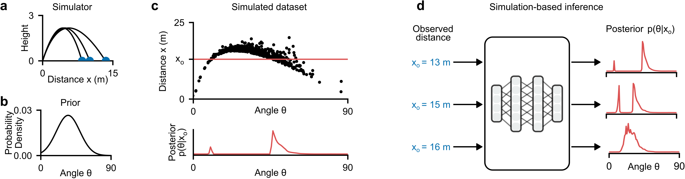
Uncertainty
Why quantify uncertainty?
- Point estimates are not enough—we need to know how confident we are
- Decisions under uncertainty require calibrated probabilistic predictions
- Critical for safety, design, and scientific discovery
Two fundamental types:
- Aleatoric uncertainty (irreducible): inherent stochasticity in the data-generating process (measurement noise, natural variability). Cannot be reduced with more data.
- Epistemic uncertainty (reducible): uncertainty due to limited knowledge—finite data, incomplete models, unknown parameters. Can be reduced with more observations or better models.
In the SBI context:
- The simulator captures aleatoric uncertainty via its stochastic execution: \(\bx = G(\btheta, \bzeta)\) with random \(\bzeta\)
- The posterior \(p(\btheta \mid \xo)\) captures epistemic uncertainty: which parameters are consistent with the observed data?
- SBI aims to recover the full posterior—not just a point estimate—giving access to both uncertainty types
Note
A well-calibrated posterior should be neither overconfident nor underconfident—this is exactly what SBI diagnostics will verify.
Amortized Neural Posterior Estimation
The ball-throw example illustrates the core SBI idea (Deistler et al. 2025):
- Simulate: sample \(N\) pairs \((\btheta_i, \bx_i) \sim p(\btheta, \bx)\) from the joint
- Train: fit an inference network \(q_\phi(\btheta \mid \bx)\) to predict the distribution of \(\btheta\) given \(\bx\)
- Infer: evaluate \(q_\phi(\btheta \mid \xo)\) for any new observation \(\xo\) — in milliseconds
Important
What the network learns: Unlike a point estimator that predicts a single \(\hat{\btheta}\), the inference network learns to output a full probability distribution over \(\btheta\) conditioned on each input \(\bx\). It captures multi-modality, correlations, and uncertainty.
Amortization: Once trained, the same network can be applied to any new observation without retraining or additional simulations. This is fundamentally different from classical methods (MCMC, ABC) that must restart inference for each new \(\xo\).
The Forward Model / Simulator
A simulator is a (possibly stochastic) program that generates synthetic data:
\[\btheta \sim p(\btheta), \qquad \bx \sim p(\bx \mid \btheta) \quad\text{or equivalently}\quad \bx = \texttt{Sim}(\btheta, \texttt{rng})\]
Running the simulator with fixed \(\btheta\) and varying noise \(\bzeta\) is equivalent to sampling from an implicit likelihood (Radev et al. 2023; Cranmer, Brehmer, and Louppe 2020):
\[\bx \sim p(\bx \mid \btheta) \;\Longleftrightarrow\; \bx = G(\btheta, \bzeta) \quad\text{with}\quad \bzeta \sim p(\bzeta)\]
In principle, this likelihood can be obtained by marginalizing the joint \(p(\bzeta, \bx \mid \btheta)\) over all possible execution trajectories of the simulation program, but this is typically intractable (Radev et al. 2023). The posterior follows from the joint:
\[p(\btheta \mid \bx) \propto p(\btheta)\!\int_{\Xi} p(\bzeta, \bx \mid \btheta)\,d\bzeta\]
which is singly intractable (one integral over the noise space \(\Xi\)).
Cont’d
The prior predictive distribution (marginal likelihood):
\[p(\bx) = \int_{\Theta}\!\int_{\Xi} p(\btheta)\,p(\bzeta, \bx \mid \btheta)\,d\bzeta\,d\btheta\]
is doubly intractable—both integrals are difficult to approximate (Radev et al. 2023).
Important
The likelihood \(p(\bx \mid \btheta)\) is intractable—we can sample from it but cannot evaluate it.
Likelihood-Based vs. Simulation-Based Models
| Likelihood-Based | Simulation-Based | |
|---|---|---|
| Joint model \(p(\btheta, \bx)\) | \(\btheta \sim p(\btheta),\; \bx \sim p(\bx \mid \btheta)\) | \(\btheta \sim p(\btheta),\; \bx = \texttt{Sim}(\btheta, \texttt{rng})\) |
| Prior \(p(\btheta)\) | Can be sampled and evaluated | Can be sampled, optionally evaluated |
| Data model \(p(\bx \mid \btheta)\) | Can be sampled and evaluated | Can be sampled but not evaluated |
| Posterior \(p(\btheta \mid \bx)\) | (Usually) intractable | Doubly intractable |
“Doubly intractable” = neither the likelihood nor the normalizing constant is available.
Bayesian Inference: The Goal
Bayes’ rule:
\[p(\btheta \mid \xo) = \frac{p(\xo \mid \btheta)\, p(\btheta)}{p(\xo)}\]
- Prior \(p(\btheta)\): domain knowledge before observing data
- Likelihood \(p(\xo \mid \btheta)\): how well parameters explain observations
- Evidence \(p(\xo) = \int p(\xo \mid \btheta)\,p(\btheta)\,d\btheta\): normalizing constant (intractable)
- Posterior \(p(\btheta \mid \xo)\): updated belief after data
The posterior provides a complete description of parameter uncertainty: it captures not just the best estimate, but all plausible parameter configurations, their dependencies, and multi-modality.
Why Is This Hard?
Evidence integral: Computing \(p(\xo) = \int p(\xo \mid \btheta)\,p(\btheta)\,d\btheta\) requires integrating over the entire parameter space—intractable in high dimensions.
Intractable likelihood: For simulation-based models, even evaluating \(p(\xo \mid \btheta)\) for a single \(\btheta\) is impossible.
Classical methods fail: Conjugate priors, standard variational inference, or MCMC with known likelihoods do not apply.
Note
This motivates likelihood-free / simulation-based inference.
Approximate Bayesian Computation (ABC)
Algorithm:
- Sample \(\btheta_i \sim p(\btheta)\)
- Simulate \(\bx_i \sim p(\bx \mid \btheta_i)\)
- Accept \(\btheta_i\) if \(d(\bx_i, \xo) < \epsilon\)
Issues:
- How to choose summary statistics \(\bx'\)?
- How to choose tolerance \(\epsilon\)? Distance \(d\)?
- No tractable posterior density
- Must re-run simulations for every new observation or changed prior (no amortization)
- Scales very poorly with \(\dim(\bx)\)
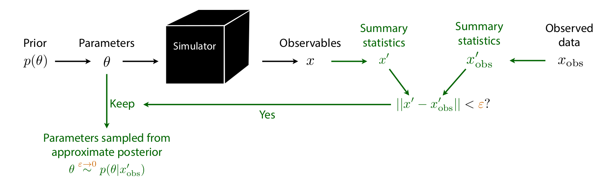
MCMC Limitations & Problem Archetypes
MCMC for simulators:
- Requires likelihood evaluations at every step—unavailable
- Even with surrogates: sequential sampling, cannot parallelize
- Slow convergence in high dimensions
- Difficult tuning (step size, chains, warmup)
Warning
For expensive, nonlinear forward models with high-dim parameters/data, ABC and MCMC become impractical.
Problem archetypes (Arruda et al. 2025, Table 2)
| Budget | \(\dim(\btheta)\) | \(\dim(\bx)\) | Example |
|---|---|---|---|
| High | Low | Low | SBI benchmarks |
| Low | Low | Low | \(N\)-body sims |
| High | Low | High | Single-molecule |
| Low | Low | High | Galaxy sims |
| High | High | Low | 2D Darcy flow |
| Low | High | Low | Groundwater |
| High | High | High | Bayesian NNs |
| Low | High | High | Ultrasound |
SBI: The Big Picture
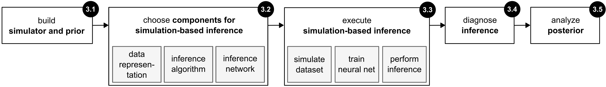
Deistler et al. (2025), Fig. 3
Five-step workflow (Deistler et al. 2025):
- Define the problem (simulator + prior)
- Choose SBI components (data representation, method, network)
- Execute SBI (simulate, train, infer)
- Posterior diagnostics (well-specification, coverage)
- Analyze the posterior
All simulations done offline & in parallel; training decoupled from simulation; inference (after training) is fast.
Step 1: Defining the Problem
The simulator:
- Maps \(\btheta \to \bx\) via the likelihood \(p(\bx \mid \btheta)\)
- Must be able to generate forward samples: \(\bx \sim p(\bx \mid \btheta)\)
- Can be a “black box”—no likelihood evaluations or gradients needed
The prior \(p(\btheta)\):
- Reflects scientific knowledge and constraints
- Only needs to be samplable (not necessarily evaluable)
- Width affects computational cost: broad prior \(\Rightarrow\) more simulations needed
- Unlike classical Bayesian methods: no need for conjugate priors
Warning
Critical pitfall: Model misspecification—when \(\xo\) falls outside the range of what the model (simulator + prior) can generate. SBI can produce spurious posteriors in this case.
Step 2: Choosing SBI Components
Data representation:
- Raw data \(\bx\) (high-dimensional)
- Summary statistics \(\mathcal{S}(\bx)\): hand-crafted features
- Embedding networks \(\mathcal{S}_\lambda\): learned representations (CNNs, RNNs, Transformers)
Three core inference methods:
| Method | Target | Output | Inference | i.i.d. data |
|---|---|---|---|---|
| NPE | Posterior \(p(\btheta \mid \bx)\) | Direct samples | Fast (ms) | Difficult |
| NLE | Likelihood \(p(\bx \mid \btheta)\) | Requires MCMC/VI | Slow (sec–min) | Efficient |
| NRE | Ratio \(p(\bx \mid \btheta)/p(\bx)\) | Requires MCMC/VI | Slow (sec–min) | Efficient |
Network choices: normalizing flows (Papamakarios et al. 2021), diffusion models (Song et al. 2021), flow matching (Lipman et al. 2023; Wildberger et al. 2023). Details in next Lecture.
Neural Posterior Estimation (NPE) via KL Divergence
Goal: Learn \(q_\phi(\btheta \mid \bx) \approx p(\btheta \mid \bx)\)
Minimize the expected forward KL divergence:
\[\begin{aligned} &\min_{q_\phi} \; \E_{p(\bx)}\Big[\KL\big(p(\btheta \mid \bx)\,\|\,q_\phi(\btheta \mid \bx)\big)\Big] \\[4pt] &= \min_{q_\phi}\; \E_{p(\bx)}\,\E_{p(\btheta \mid \bx)}\left[\log \frac{p(\btheta \mid \bx)}{q_\phi(\btheta \mid \bx)}\right] \\[4pt] &= \max_{q_\phi}\; \E_{p(\bx,\btheta)}\big[\log q_\phi(\btheta \mid \bx)\big] + \text{const.} \end{aligned}\]
Training loss:
\[\boxed{\mathcal{L}(\phi) = \E_{(\btheta,\bx)\sim p(\btheta,\bx)}\big[-\log q_\phi(\btheta \mid \bx)\big]}\]
Tip
This is maximum likelihood under the joint \(p(\bx,\btheta)\)! We only need samples from the joint—exactly what the simulator provides.
Sampling and Neural Density Estimation
Generating simulations (Step 3 of the workflow):
\[\text{For } i = 1,\ldots,N:\quad \btheta_i \sim p(\btheta), \quad \bx_i \sim p(\bx \mid \btheta_i)\]
\[\text{Dataset: } \{(\btheta_i, \bx_i)\}_{i=1}^N \sim p(\btheta, \bx)\]
Training: Minimize \(\mathcal{L}(\phi)\) with standard deep learning (SGD, early stopping, checkpointing).
At inference time (for NPE):
- Given observation \(\xo\), directly sample \(\btheta \sim q_\phi(\btheta \mid \xo)\)
- No MCMC needed
- Inference in milliseconds
The Power of Amortized Inference
Amortization: Train once on the full prior, apply to any observation without retraining.
Cost structure:
- Fixed cost (once): \(N\) simulations + neural network training
- Per-observation cost: single forward pass (NPE) = milliseconds
Compare to non-amortized methods:
- Traditional MCMC/ABC: each new observation requires independent, expensive inference
- Sequential SBI (SNPE): fewer simulations but loses amortization
Applications enabled:
- Real-time analysis (e.g., LIGO gravitational waves)
- High-throughput inference across many observations
- Experimental design and active learning
- Critical for diagnostics: coverage checks require 1000s of posterior evaluations—only tractable with amortization
Non-amortized inference
Non-amortized (observation-specific) inference optimizes \(q_\phi\) for a single \(\xo\) using the reverse KL:
\[\min_{q_\phi}\;\KL\big(q_\phi(\btheta)\,\|\,p(\btheta \mid \xo)\big) = \min_{q_\phi}\;\E_{q_\phi(\btheta)}\!\left[\log \frac{q_\phi(\btheta)}{p(\btheta \mid \xo)}\right]\]
Amortized (forward KL):
- Mass-covering: \(q_\phi\) covers all modes of \(p\)
- Trained once, applied to any \(\xo\)
- Enables coverage diagnostics (needs 1000s of evaluations)
- May suffer from an amortization gap: approximation quality trades off against generalization across all \(\bx\)
Non-amortized (reverse KL):
- Mode-seeking: \(q_\phi\) concentrates on dominant mode(s)
- Must be re-optimized for every new \(\xo\)
- Can be more accurate for a specific observation
- No amortization gap, but no reuse across observations
- Coverage diagnostics become prohibitively expensive
Tip
The amortization gap is the price paid for generalization: an amortized posterior \(q_\phi(\btheta \mid \bx)\) that works well across all \(\bx\) may be slightly worse for any particular \(\xo\) than a posterior optimized specifically for that \(\xo\).
Coverage diagnostics
How do we know whether a learned posterior \(q_\phi(\btheta \mid \bx)\) is trustworthy?
Coverage diagnostics test whether the posterior’s stated uncertainty matches reality:
- Draw test pairs \((\btheta^*, \bx) \sim p(\btheta, \bx)\) with known ground-truth parameters
- For each pair, check: does \(\btheta^*\) fall within the posterior’s credible regions at the expected rate?
- A well-calibrated posterior at the \(\alpha\)-level should contain \(\btheta^*\) exactly \(\alpha \times 100\%\) of the time
Why expensive: Each test requires a full posterior evaluation. Reliable calibration checks need \(10^3\)–\(10^4\) test pairs. Without amortization, each test pair demands a separate MCMC run—making diagnostics prohibitively costly. With amortized NPE, all \(10^4\) posteriors are obtained in seconds.
Note
Coverage diagnostics are treated in detail later in this lecture. The key point: amortization is not just convenient—it is essential for validation.
Summary Statistics: Why and How
Simulators often produce high-dimensional outputs \(\bx \in \R^d\) (\(d \gg 1\)), e.g., large images, long time series, or volumetric fields. Dimensionality reduction via summary statistics \(\mathcal{S}: \R^d \to \R^r\) (\(r \ll d\)) can help:
- Isolate informative components while discarding noise
- Eliminate redundant features and reduce computational cost
- Combat model misspecification: extract features the model can capture while ignoring those it cannot
Goal: The summary statistic should preserve information about \(\btheta\):
\[p(\btheta \mid \mathcal{S}(\bx)) \approx p(\btheta \mid \bx)\]
A sufficient statistic achieves equality, but for complex simulators sufficient statistics are generally unknown.
Approaches: hand-crafted domain features (e.g., autocorrelation, power spectra), physics-based summaries [e.g., migrated images in geophysics; Orozco et al. (2024)], or learned summaries via embedding networks.
Physics-based summary statistics
Parameter-to-observation can be complex and depends on acquisition geometry
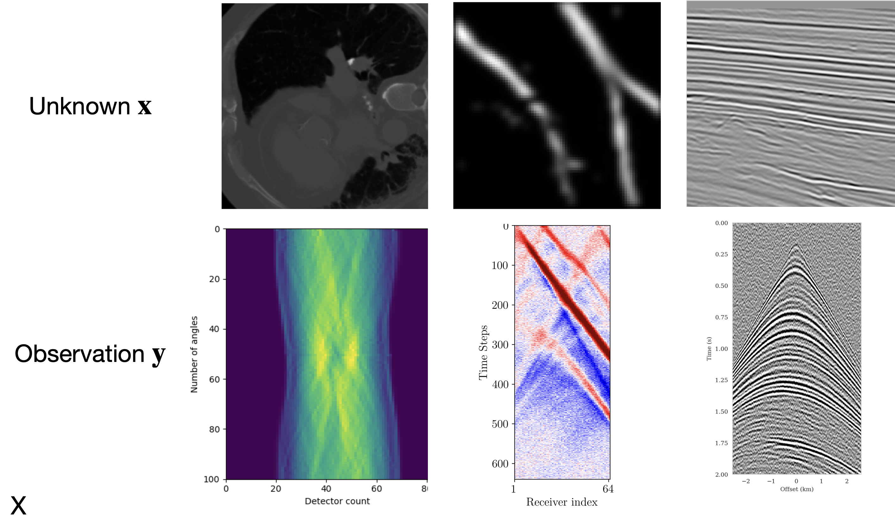
Physics-based summary statistics compress high-dimensional data while preserving information about model parameters (Orozco, Louboutin, and Herrmann 2023)
Summary statistics with adjoints
Observations: \(\by\)
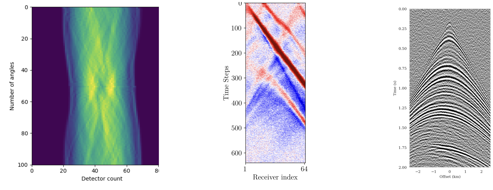
Summary: \(\bar{\by}\)
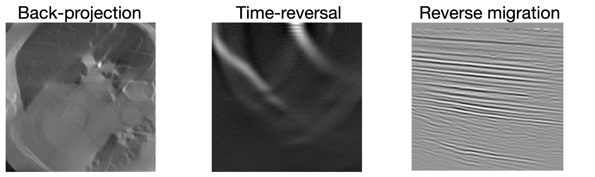
Adjoint-based summary statistics leverage the physics of the forward model to compute informative data representations at low cost (Orozco, Louboutin, and Herrmann 2023).
Embedding Networks for High-Dimensional Data
Embedding networks are feed-forward neural networks that learn to compress high-dimensional data into informative low-dimensional summaries. Unlike invertible or generative networks, they are standard multi-layer architectures optimized purely for compression.
- An embedding network \(\mathcal{S}_\lambda\) compresses the raw data \(\bx\) into a low-dimensional representation before it is passed to the inference network \(q_\phi\)
- The embedding network is trained jointly with the inference network using the same loss \(\mathcal{L}(\phi, \lambda)\)—no separate feature engineering needed
- Architecture depends on data structure:
- CNNs for images
- RNNs / Transformers for time series
- MLPs / ResNets for unstructured data
- Set Transformers for exchangeable (i.i.d.) observations
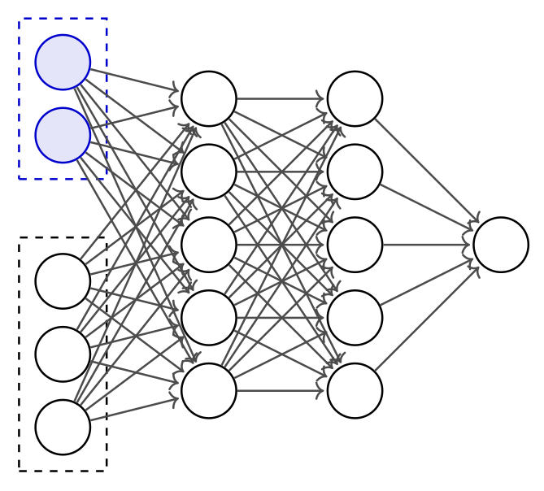
Warning
Training large embedding networks requires many simulations. Powerful architectures (e.g., Transformers) may be impractical with limited simulation budgets.
NPE with Normalizing Flows and Learned Summaries
Normalizing flows define \(q_\phi(\btheta \mid \bx)\) through a chain of \(K\) invertible transformations:
- Base distribution: \(\bz_0 \sim p_0(\bz) = \mathcal{N}(\mathbf{0}, \mathbf{I})\)
- Forward pass: \(\bz_k = f_k(\bz_{k-1};\, \bx)\) for \(k = 1, \ldots, K\)
- Output: \(\btheta = \bz_K\)
Training objective (change of variables): \[\log q_\phi(\btheta \mid \bx) = \log p_0(\bz_0) - \sum_{k=1}^K \log\left|\det \frac{\partial f_k}{\partial \bz_{k-1}}\right|\]
End-to-end with learned summaries: Replace raw data \(\bx\) with \(\mathcal{S}_\lambda(\bx)\): \[\mathcal{L}(\phi, \lambda) = \mathbb{E}_{(\btheta,\bx)\sim p(\btheta,\bx)}\big[-\log q_\phi(\btheta \mid \mathcal{S}_\lambda(\bx))\big]\]
The embedding network \(\mathcal{S}_\lambda\) (feed-forward) and the normalizing flow \(q_\phi\) (invertible) are trained jointly.
Sampling (fast, feed-forward): compute \(\mathbf{s} = \mathcal{S}_\lambda(\xo)\), draw \(\bz_0 \sim \mathcal{N}(\mathbf{0}, \mathbf{I})\), apply \(\btheta = f_K \circ \cdots \circ f_1(\bz_0;\, \mathbf{s})\). No MCMC needed.

Well-Specified Models: A Critical Requirement
Definition: A model is well-specified if \(\xo\) could have been generated by the simulator:
\[\exists\;\btheta^* \text{ such that } p(\btheta^*, \xo) > 0\]
i.e., \(\xo\) falls within the support of simulated data.
Consequences of misspecification:
- Neural networks extrapolate erratically outside training distribution
- SBI produces spurious posteriors—unreliable and uninterpretable
Detection strategies:
- Prior predictive check: Do simulations cover the range of \(\xo\)?
- Out-of-distribution detection: Train unconditional density \(p(\bx)\), check likelihood of \(\xo\)
- OOD in latent space: Detect anomalies in embedding network representations
Both checks can be performed before training any inference network.
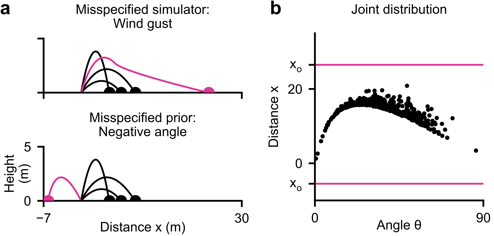
Posterior Predictive Checks (PPCs)
Procedure:
- Sample \(\btheta_i \sim q_\phi(\btheta \mid \xo)\) for \(i = 1,\ldots,N\)
- Simulate posterior predictives: \(\tilde{\bx}_i \sim p(\bx \mid \btheta_i)\)
- Compare distribution of \(\{\tilde{\bx}_i\}\) to \(\xo\)
Good: Posterior predictives resemble \(\xo\)
Bad: Systematic differences \(\Rightarrow\) problems
Limitations:
- Necessary but not sufficient
- Qualitative, not quantitative
- Can be “gamed” by a collapsed posterior
Challenges for large problems:
- High-dimensional \(\bx\) makes comparison difficult
- Computational cost of re-simulating can be significant
- Need domain-specific comparison metrics
Coverage Diagnostics: Overview
Goal: Verify that uncertainty estimates are statistically calibrated.
Two families of tests (Hermans et al. 2022; Talts et al. 2018):
- Global coverage checks: assess calibration on average across many observations. Computationally cheaper but errors can average out.
- Local coverage checks: assess calibration for specific observations. More powerful but much more expensive.
All coverage methods require a calibration set of \(N\) pairs \((\btheta^*, \bx) \sim p(\btheta, \bx)\) plus inference for each pair.
Failure modes: Below diagonal \(\to\) overconfident; Above \(\to\) underconfident; Curved \(\to\) biased.
Simulation-Based Calibration (SBC)
SBC (Talts et al. 2018) checks whether the posterior marginals are correctly calibrated:
Algorithm:
- For \(i = 1, \ldots, N\): sample \(\btheta^*_i \sim p(\btheta)\), simulate \(\bx_i \sim p(\bx \mid \btheta^*_i)\)
- For each \((\btheta^*_i, \bx_i)\): draw \(L\) posterior samples \(\{\btheta^{(1)}, \ldots, \btheta^{(L)}\} \sim q_\phi(\btheta \mid \bx_i)\)
- For each parameter dimension \(j\): compute the rank of \(\theta^*_{i,j}\) among the \(L\) posterior samples
- The rank histogram (histogram of ranks across all \(N\) test pairs) should be uniform
Interpreting rank histograms:
- Uniform \(\to\) well-calibrated
- U-shaped \(\to\) overconfident (posterior too narrow)
- Inverse U-shaped \(\to\) underconfident (posterior too broad)
- Skewed left/right \(\to\) systematic bias
Computational cost: Requires \(N \times L\) posterior samples. With amortized NPE this takes seconds; with NLE/NRE each of the \(N\) test cases needs a separate MCMC run.
Expected Coverage and TARP
Expected Coverage [HPD = Highest Posterior Density; Hermans et al. (2022)]:
- For each test pair \((\btheta^*, \bx)\): compute the smallest HPD region of \(q_\phi(\btheta \mid \bx)\) that contains \(\btheta^*\)
- Plot the fraction of test cases where \(\btheta^*\) falls within the \(k\%\) HPD region, for \(k = 0, \ldots, 100\)
- A well-calibrated posterior yields a P-P plot on the diagonal
- Checks the joint posterior (catches correlation errors that SBC misses), but cannot pinpoint which parameter is miscalibrated
TARP [Tests of Accuracy with Random Points; Lemos et al. (2023)]:
- Constructs credible regions using randomly positioned reference points instead of HPD contours
- Advantage: works with generative models that do not provide density evaluation (e.g., diffusion models, GANs)
- Yields a similar P-P plot as expected coverage
Note
All global diagnostics require \(10^3\)–\(10^4\) calibration simulations. Amortization is essential—without it, each calibration pair requires a full MCMC run.
Marginal vs. Conditional Calibration
Coverage diagnostics (SBC, Expected Coverage, TARP) and uncertainty-vs-error analysis test different aspects of calibration:
Coverage plots are marginal diagnostics
- For each nominal credible level \(\alpha\), check: does a fraction \(\alpha\) of test samples have \(\btheta^* \in C_\alpha(\bx)\)?
- Perfect calibration \(=\) diagonal in the P-P plot
- This averages over all observations \(\bx\)
- A posterior can be overconfident in some regions and underconfident in others—these errors cancel in the marginal average
- Marginal calibration is necessary but not sufficient
Uncertainty vs. error is a conditional diagnostic
- For each observation \(\bx\), check: does the predicted posterior spread \(\sigma(\bx) = \sqrt{\text{Var}_q[\btheta \mid \bx]}\) predict the realized error \(|\btheta^* - \mathbb{E}_q[\btheta \mid \bx]|\)?
- Tests calibration locally, for each observation
- Catches failures invisible to marginal diagnostics
Formally: Conditional calibration requires \[\text{Var}_q[\btheta \mid \bx] = \mathbb{E}\!\left[(\btheta - \mathbb{E}_q[\btheta \mid \bx])^2 \,\big|\, \bx\right] \quad \forall\; \bx\]
Marginalizing over \(\bx\) gives correct coverage, but correct coverage does not guarantee this holds pointwise.
Implications for Diagnostics in Practice
Hierarchy of calibration
| Diagnostic | Type | What it tests |
|---|---|---|
| SBC rank histograms | Marginal | Per-parameter marginals |
| Expected Coverage / TARP | Marginal | Joint posterior (global) |
| Uncertainty vs. error | Conditional | Local calibration per \(\bx\) |
Conditional calibration \(\Rightarrow\) marginal calibration, but not vice versa.
Example of marginal-but-not-conditional calibration: A posterior \(q(\btheta \mid \bx)\) that is too narrow for noisy observations and too wide for clean observations can still lie on the diagonal on average.
Practical recommendations
- Always run SBC or TARP as a first check—they are cheap with amortized posteriors
- Complement with uncertainty-vs-error plots to detect local miscalibration
- For high-dimensional problems (imaging), use pixelwise diagnostics:
- \(z\)-scores flag pixels where error \(> 2\times\) uncertainty
- UCE bins pixels by error magnitude and checks whether uncertainty tracks error
- Data residual checks (posterior predictive) work without ground truth but are necessary, not sufficient
Tip
Coverage diagnostics tell you whether your posterior is globally trustworthy. Uncertainty-vs-error analysis tells you whether it is locally trustworthy. Use both.
Quantitative UQ Assessment: Beyond Standard Diagnostics
For high-dimensional inference problems (e.g., imaging), standard SBC/TARP diagnostics are impractical because parameter spaces have millions of dimensions. Alternative UQ metrics exist that assess uncertainty pixelwise (Orozco et al. 2024):
1. \(z\)-score (error vs. uncertainty warning):
\[z\text{-score} = \frac{|\bx^* - \bx_{\text{mean}}|}{\bx_{\text{std}}}\]
Pixels where error \(> 2\times\) uncertainty are flagged. A low percentage of flagged pixels indicates good UQ.
2. Uncertainty Calibration Error (UCE): Bins pixels by error magnitude and checks whether uncertainty tracks error. Lower UCE = better calibrated.
3. Posterior coverage percentage: Fraction of pixels where the ground truth falls within the \([1\%, 99\%]\) percentile range of posterior samples.
4. Data residual check: Pass posterior samples through the forward operator and check fit to observed data—does not require ground truth.
Warning
Metrics 1–3 require access to ground truth, limiting them to synthetic validation. Metric 4 (data residual) works on field data but is necessary, not sufficient.
Example: Seismic Velocity Model Building with SBI
Orozco et al. (2024) apply SBI with conditional diffusion networks to seismic velocity model building:
- Forward model: acoustic wave equation (\(\bx = \text{velocity model}, \bx_o = \text{seismic data}\))
- Summary statistics: physics-based — subsurface-offset Common Image Gathers (CIGs) compress waveform data while preserving subsurface information
- Training: ~800 paired simulations (velocity model + CIGs)
- Inference: posterior samples in seconds per sample (after one-time 14h GPU training)
- Amortized: same trained network applied to many test observations
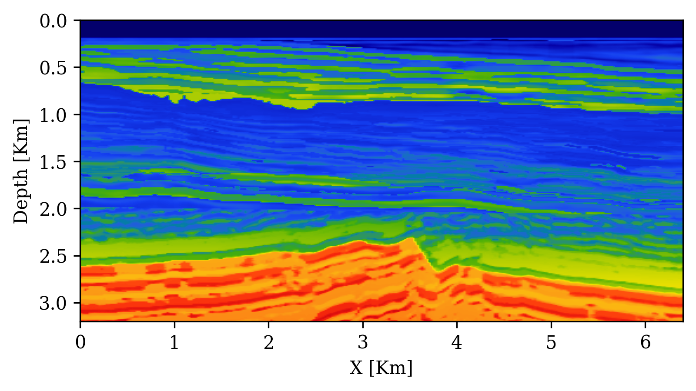

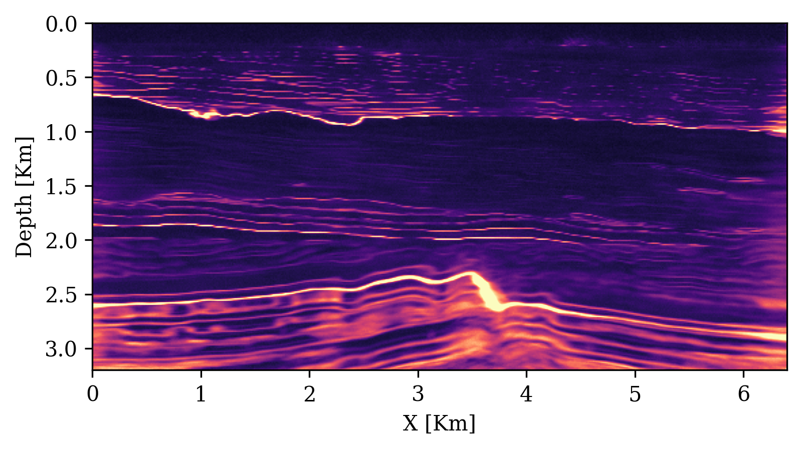
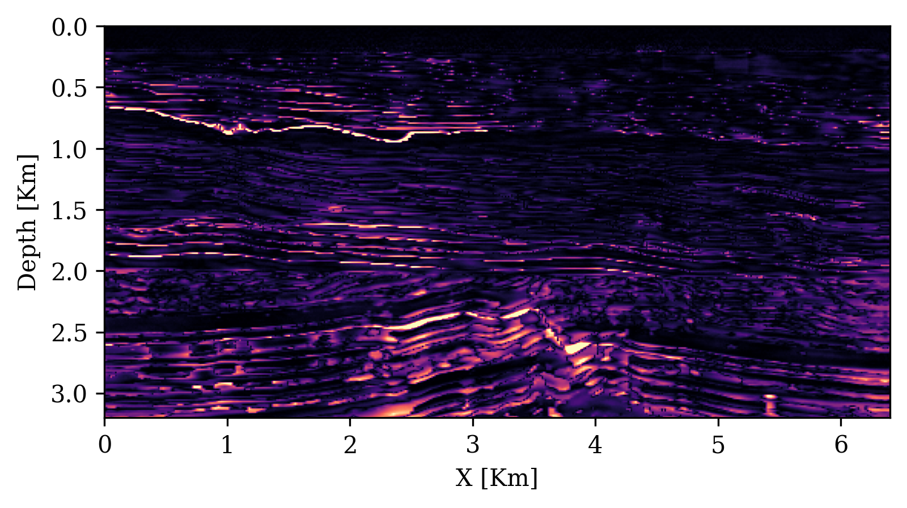
UQ Metrics for Seismic Imaging
Calibration (UCE): the error-uncertainty correlation should follow the diagonal. CIGs improve calibration over RTMs.
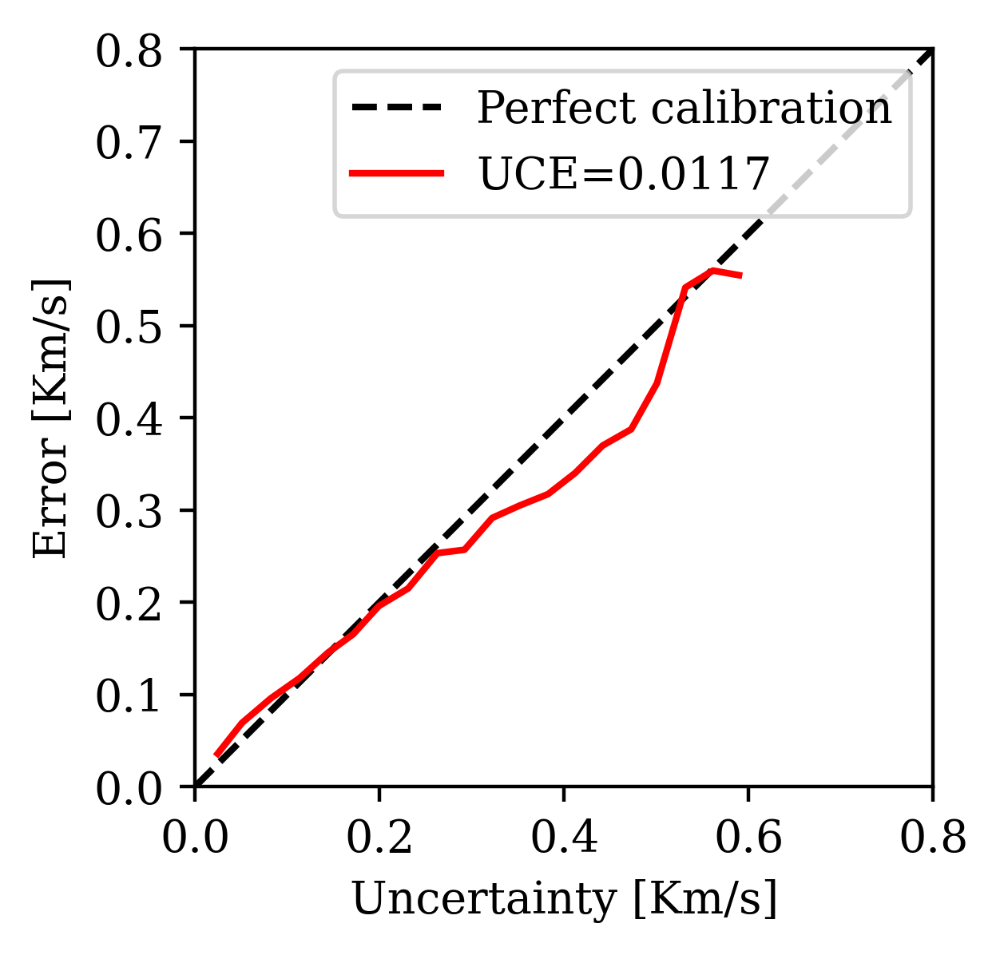

Posterior coverage traces: posterior samples (colored) should bracket the ground truth (black). Coverage with CIGs: 90.6% vs. RTMs: 82.1%.


Analyzing the Posterior
Visualization:
- 1D/2D marginal posteriors \(p(\theta_i \mid \xo)\); corner plots showing parameter relationships
Marginal moments (cheap via Monte Carlo):
\[\E_{p(\btheta \mid \xo)}[f(\btheta)] = \int p(\btheta \mid \xo)\,f(\btheta)\,d\btheta \;\approx\; \frac{1}{N}\sum_{i=1}^N f(\btheta_i)\]
Conditional moments—reveal parameter co-tuning:
\[\E_{p(\theta_i \mid \btheta_{/i},\xo)}[f(\theta_i)] = \int p(\theta_i \mid \btheta_{/i},\xo)\,f(\theta_i)\,d\theta_i\]
MAP estimation: \(\hat{\btheta}_{\text{MAP}} = \arg\max_{\btheta} \log q_\phi(\btheta \mid \xo)\) via gradient optimization.
Bayesian decision theory—choose action \(a\) minimizing expected cost:
\[\ell(\xo, a) = \int p(\btheta \mid \xo)\,c(\btheta, a)\,d\btheta\]
Sensitivity analysis: Which data features constrain which parameters?
Summary
SBI strengths:
- Works with any black-box simulator (no likelihood needed)
- Fully parallelizable simulation generation
- Amortized inference: rapid posterior evaluation after training
- Handles high-dimensional observations via embedding networks
- Universal applicability across scientific domains
Challenges:
- Approximate—requires careful validation with diagnostics
- Can require many simulations
- Sensitive to model misspecification
- Improving simulation-efficiency, accuracy, and robustness are active research directions
Recommended starting point: NPE + normalizing flows + full diagnostic pipeline
Code and Resources
Software:
sbiPython toolbox (Boelts et al. 2024): https://github.com/sbi-dev/sbi- Documentation: https://sbi.readthedocs.io
Practical guide code (reproduces all examples from Deistler et al. (2025)):
SBI applications database (interactive explorer of real-world applications):
- https://simulation-based-inference.org
- Interactive explorer: https://sbi-applications-explorer.streamlit.app
Next Lecture: Neural Density Estimators
Today we treated \(q_\phi\) as a black box. Next time we open the box.
Topics for Lecture 2:
- Normalizing flows: change of variables, invertible transformations \[\log p(\bx) = \log p(\bz_0) - \sum_{k=1}^K \log|\det J_{f_k}(\bz_{k-1})|\]
- Score-based diffusion models: forward/reverse processes, denoising score matching \[d\bz_t = f(t)\,\bz_t\,dt + g(t)\,dW_t\]
- Flow matching: simpler training objectives, continuous-time normalizing flows
- Design choices: VP vs. VE schedules, parameterizations, samplers
- Compositional scoring for hierarchical models
References
This lecture was prepared with the assistance of Claude (Anthropic) and validated by Felix J. Herrmann.
This work is licensed under a Creative Commons Attribution-NonCommercial-ShareAlike 4.0 International License.